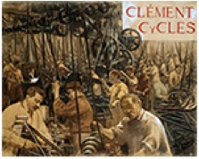
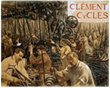

Cette série d'images est issue du fonds documentaire du Musée du Domaine départemental de Sceaux dans les Hauts-de-Seine. Le travail d'analyse et d'enrichissement de ces images a été réalisé par des enseignants d'arts plastiques de l'académie de Versailles.


Cette série d'images est issue du fonds documentaire de la Maison de Chateaubriand, située à Châtenay-Malabry au sein du Domaine départemental de la Vallée-aux-Loups, dans les Hauts-de-Seine. Le travail d'analyse et d'enrichissement de ces images a été réalisé par des enseignants d'arts plastiques de l'académie de Versailles.

Cette série d'images sur le thème de la Première Guerre mondiale est issue du fonds des Archives départementales des Hauts-de-Seine. Le travail d'analyse et d'enrichissement de ces images a été réalisé par des enseignants d'histoire de l'académie de Versailles.
Cette série d'images sur le thème de la Révolution industrielle est issue du fonds des Archives départementales des Hauts-de-Seine. Le travail d'analyse et d'enrichissement de ces images a été réalisé par des enseignants d'histoire de l'académie de Versailles.

 

Cette série d'images sur le thème de la Révolution française est issue du fonds des Archives départementales des Hauts-de-Seine. Le travail d'analyse et d'enrichissement de ces images a été réalisé par des enseignants d'histoire de l'académie de Versailles.